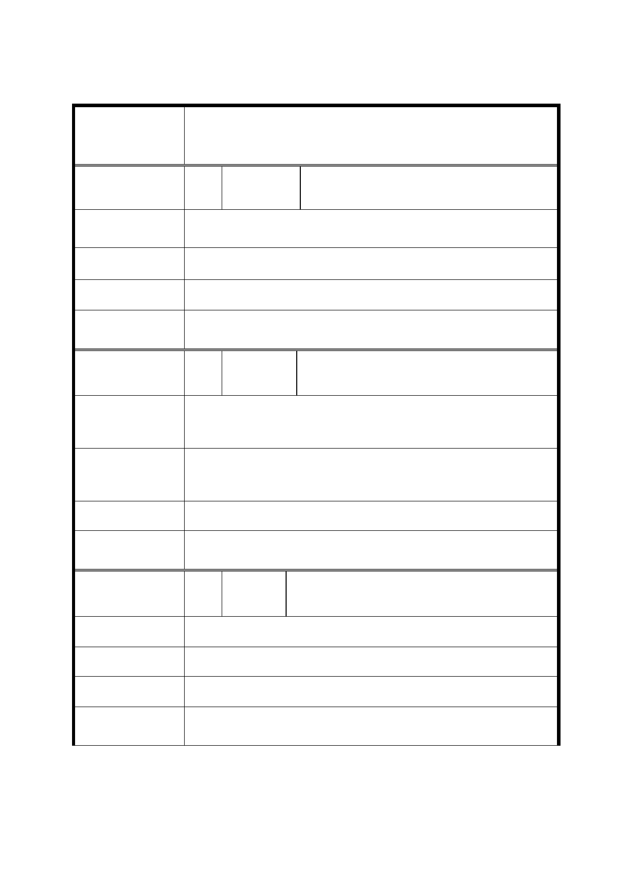

修訂「變 更臺北市文山區景美溪左岸（萬壽橋至道南橋間）
案 名 機關用地、公園用地、道路用地為第三種住宅區、道路用
地、公園用地細部計畫案」內有關重劃規定事項案
編 號 14 陳情人 謝○奇、謝邱○瑩、謝○興、闕○蘭
陳
情
理
由
請依照都市計畫原道路規劃打通整條 6 米道路以利交通
順暢（請包含 349 地號的計畫道路）。
建議辦法
市 府 回 應 同編號1回應。
委
決
員
會
議
同編號1。
編 號 15 陳情人 謝○全
陳
情
理
由
感謝市府團隊用心規劃，盡心盡力的讓本案件再次重新
公展。
建
議
辦
法
期望按照公展內容，儘速辦理重劃，讓地主獲得土地開發
的權益。
市 府 回 應 同編號8回應。
委
決
員
會
議
同編號1。
編 號 16 陳情人 謝○豐、謝○榮、謝○錦
陳情理由
建 議 辦 法 依照這次修訂辦法儘快執行。
市 府 回 應 同編號8回應。
委
決
員
會
議
同編號1。
第 - 10 - 頁，共 20 頁